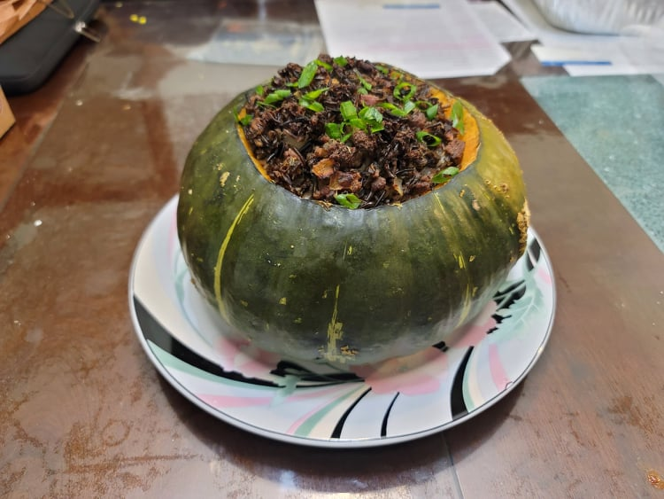

Stuffed Squash

Ingredients:
Stuffing:
- 1 lb Ground bison
- 4 Wild onions or 1 medium Onion, Diced
- 1-2 tbsp Sunflower oil
- 1 cup Wild rice, cooked
- 1 tsp Salt
- 1 tsp Dried crushed sage
- 1/8 tsp Cayenne pepper
- 3 Eggs, beaten
Pumpkin/Squash:
- 4-5 lb Pumpkin or Squash
- 1 tsp Salt
- 1/2 tsp Dry mustard
Instructions:
- Preheat an oven to 350 degrees Fahrenheit.
- Carve out the top from a pumpkin or squash and remove seeds and soft innards. Poke shallow holes into the inside of the squash with a fork and rub the insides all over with the salt and the mustard.
- Heat the oil in a large pan over medium heat. Add in the onions and cook until translucent. Then add in the ground bison. Mix and cook until the meat has browned. Then remove from heat.
- Stir the cooked wild rice, salt, sage, and cayenne into the pan. Taste and adjust for seasoning. Then mix in the beaten eggs.
- Place the filling into the pumpkin/squash. Fill a shallow baking pan with about 1/2 inch of water. Place the squash into the baking tray and then place the baking tray into the oven. Let bake for 90 minutes or until tender, adding more water to the pan as needed.
- Remove from oven when tender. Optionally garnish with some scallion greens. Serve by either slicing the squash or by scooping the out some filling along with some squash and distributing.